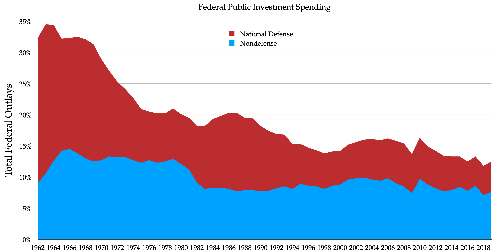
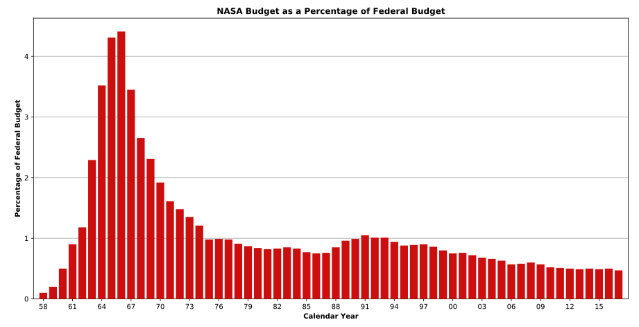
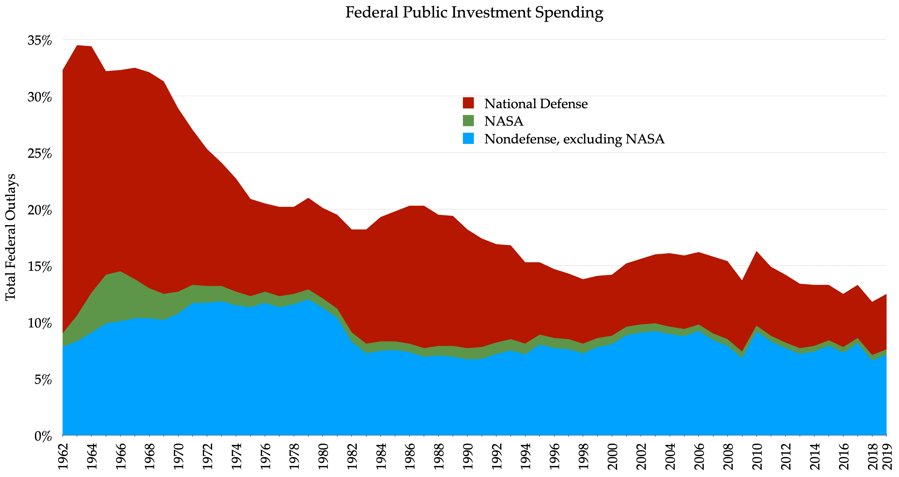

Background
Robert Reich said the US should be spending far more on infrastructure, education and basic research than it currently is, and that US public investment has been steadily declining since the 1960’s.

Reich says “that decline has largely been driven by so called deficit hawks” and shows a clip of Rand Paul. Reich does a masterful job creating a story of who, what, when, and where.
At 0:55 a graph shows a powerful statistic that from 1962 to 2019 US investment dropped from 32.3% to 12.5%.

Looking at this statistic, at first glance, would seem to greatly support Reich’s argument.
Examining the data source
The OMB Historical Tables give the data used in Table 9.1. Reich’s data checks out, except that a major category exists separating defense and non-defense spending.

The difference in spending is quite clear in that much of the decline is in defense investment. Reich talked about infrastructure, education and basic research, early childhood education, lithium ion battery and clean energy. He shows pictures of NASA rockets.
These are all non-defense spending. The lithium ion battery patent US4340652, belongs to the Department of Energy.
NASA is non-defense spending, and a major portion during the space race of the 1960s. OMB sources on NASA’s budget in this wiki.

Here is the same graph separating NASA from non-defense spending.

National Interstate and Defense Highways Act
A portion of the initial funds for building the Interstate System came from the defense budget. Precise figures could not be found.
The original bill has $1.85 billion (1956 Dollars) in funding over 1957-1959 for the Interstate highways. For comparison defense investment spending summed to $77 billion from 1962-1964. This means the Interstate and Defense Highways Act was unlikely to be more than a few percent of total defense investment spending.
Summary
Public investment is split into defense and non-defense spending. The decrease from 1962 to 2019 in investment has been driven almost entirely (91%) by a reduction in defense spending, while Reich talked almost exclusively about non-defense investments.